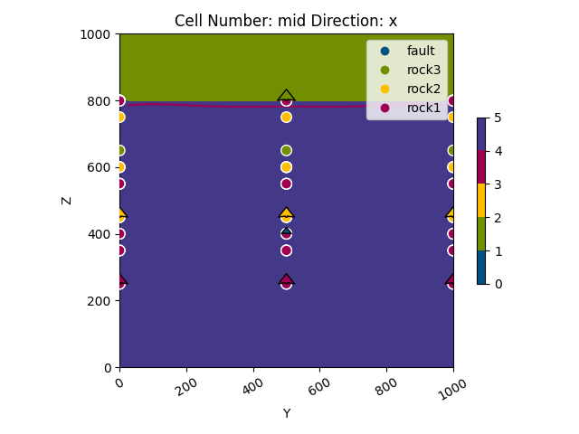

Note
Go to the end to download the full example code
Model 7 - Combination¶
This script creates a folded domain featuring an unconformity and a fault using GemPy, an open-source, Python-based library for building implicit geological models.
# Importing necessary libraries
import numpy as np
import gempy as gp
import gempy_viewer as gpv
from gempy_engine.core.data.stack_relation_type import StackRelationType
# sphinx_gallery_thumbnail_number = 2
# Generate the model
# Define the path to data
data_path = 'https://raw.githubusercontent.com/cgre-aachen/gempy_data/master/'
path_to_data = data_path + "/data/input_data/jan_models/"
# Create a GeoModel instance
data = gp.create_geomodel(
project_name='combination',
extent=[0, 2500, 0, 1000, 0, 1000],
refinement=6,
resolution=[20, 20, 20],
importer_helper=gp.data.ImporterHelper(
path_to_orientations=path_to_data + "model7_orientations.csv",
path_to_surface_points=path_to_data + "model7_surface_points.csv"
)
)
# Map geological series to surfaces
gp.map_stack_to_surfaces(
gempy_model=data,
mapping_object={
"Fault_Series" : ('fault'),
"Strat_Series1": ('rock3'),
"Strat_Series2": ('rock2', 'rock1'),
}
)
# Define the structural relation
data.structural_frame.structural_groups[0].structural_relation = StackRelationType.FAULT
data.structural_frame.fault_relations = np.array(
[[0, 1, 1],
[0, 0, 0],
[0, 0, 0]]
)
# Compute the geological model
data.interpolation_options.number_octree_levels_surface = 5
gp.compute_model(data)
data.structural_frame
Surface points hash: dd7b2f714c1c20cb7ce615c5c47ecc4cf3ca2ee3419e4090b2f11fbf633d459f
Orientations hash: 4043b59bbfa7012abd818f04f74e2b0667ba970dd71c781512289bc073f5a6d5
Setting Backend To: AvailableBackends.numpy
Chunking done: 6 chunks
Chunking done: 6 chunks
Chunking done: 9 chunks
Chunking done: 43 chunks
Chunking done: 9 chunks
Chunking done: 42 chunks
Plot the initial geological model in the y direction
gpv.plot_2d(data, direction=['y'], show_results=False)
<gempy_viewer.modules.plot_2d.visualization_2d.Plot2D object at 0x7f87cc6ca560>
Plot the result of the model in the y and x directions with data and boundaries
gpv.plot_2d(data, direction='y', show_data=True, show_boundaries=True)
gpv.plot_2d(data, direction='x', show_data=True)
# Plot the blocks accounting for fault blocks
gpv.plot_2d(
model=data,
override_regular_grid=data.solutions.raw_arrays.litho_faults_block,
show_data=True, kwargs_lithology={'cmap': 'Set1', 'norm': None}
)
- 
<gempy_viewer.modules.plot_2d.visualization_2d.Plot2D object at 0x7f87cc3268f0>
The 3D plot is commented out due to a bug.
gpv.plot_3d(data)

<gempy_viewer.modules.plot_3d.vista.GemPyToVista object at 0x7f87cc56d4e0>
Total running time of the script: (0 minutes 37.094 seconds)